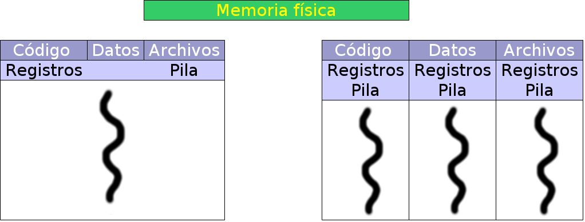
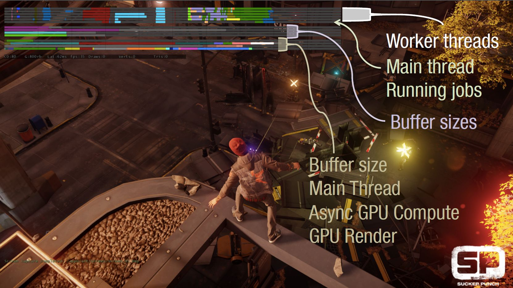
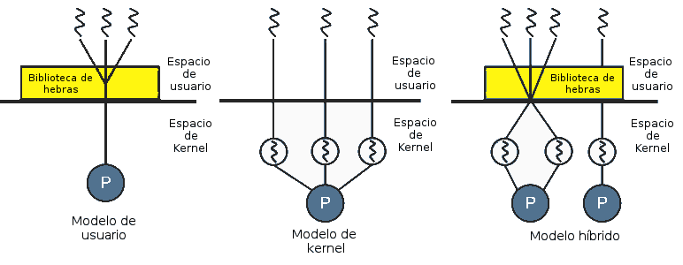

Universidad Nacional Experimental Del Táchira
Decanato De Docencia
Dpto. Ingeniería en Informática
Sistemas Operativos
Código 0435607T
Contenido
- Concepto.
- Uso de hilos.
- Modelo de hilos.
- Librerías.
Hebras o Hilos de ejecución
- Son pequeños procesos ejecutados dentro de un mismo espacio de direcciones, con un padre común.

- Es diferente un proceso hijo (se ejecuta en espacio de direcciones separados) a un hilo (se ejecuta en el mismo espacio de direcciones)
Hebras o Hilos de ejecución
- Posee un contador de programa, un conjunto de registros y una pila.
- Es creada por un proceso y comparte la sección de código, sección de datos y recursos del sistema operativo.
- Una tarea (proceso pesado) posee una o muchas hebras. (procesos ligeros)
Monohilo y multihilo

Nota: Observe como las hebras comparten la sección de código, archivo y datos del proceso al que pertenecen. Pero cada una tiene su propia sección de pila y registros.
Uso de hilos
- No producen un aumento de rendimiento.
- Muy eficientes cuando hay muchos cálculos y operaciones de E/S.
- Útiles en equipos con varios CPU. Se aprovecha realmente el procesamiento en paralelo.
- Un ejemplo: procesador de texto, servidor web, servidor de base de datos
Ventajas de utilizar
hebras sobre procesos
- Permite la ejecución de un programa aunque parte de él esté bloqueado. (generalmente por acceso a dispositivos de E/S)
- Son mas rápidas de crear, hasta 10 veces mas que un proceso.
- Es mas económico realizar el cambio de contexto.
- Mas rápido de eliminar pues solo es necesario vaciar su pila y registros,en un proceso toca eliminar todo el PCB.
Ventajas de utilizar
hebras sobre procesos
- Permite mayor control de la comunicación permitiendo crear rutinas propias, pues en el caso de procesos, es necesario usar rutinas del sistema operativo para la comunicación.
- Permite incrementar el grado de concurrencia al aprovechar el hardware con multiprocesadores.
Ejemplo de uso de Hilos
El programa utiliza hilos para:
- Inteligencia artificial de los enemigos
- Luces y sombras
- Física del ambiente: gravedad, polvo, deformaciones.
- Efectos de sonido
- Trayectoria de proyectiles.
- Y otros mas...

{kind=link}
Ejemplo de hilos/hebras en un juego
Modelo de hebras
{kind=link}
Modelo de hebras
- Al compartir espacio de direcciones, un hilo puede modificar los datos de otro hilo. No existe protección entre ellos.
- Los hilos son tratados como procesos desde el punto de vista de estados dentro del procesador. Pasan por los mismos estados de un proceso: Listo, Ejecución, Bloqueado o terminado.
Modelo de hebras
- Cada hilo tiene su propia pila.
- Se debe considerar la sincronización y competencia de los recursos de un proceso. Un hilo podría bloquear a otro mientras espera un dispositivo de E/S.
Biblioteca de Hebras
- Permite al programador una API para crear y gestionar hebras.
- Una de las formas principales es ejecutar todo desde el área de usuario como si fuese una llamada normal.
- Otro es gestionado desde el sistema operativo, el código se encuentra desde el espacio del núcleo.
- Para los sistemas POSIX utiliza el API Pthreads.
- En los sistemas Windows se usa el WinAPI.
Biblioteca de Hebras
POSIX
- Estándar definido por la IEEE conocido como 1003.1c
- Define mas de 60 llamadas a funciones para gestionar hilos.
- Aceptado por la mayoría de sistemas UNIX.
Biblioteca de Hebras
WinAPI
- Implementación hecha para los sistemas Windows (Microsoft).
- Define su interfaz de llamadas para la gestión de los hilos.
- Se define una estructura para el manejo de los hilos llamada Win32 Thread Information Block
Opinión sobre Hebras
Cuando se enfrenta a un problema, alguna gente dice: "Ya sé, usaré hilos." Ahora ellos tieAhora ellnen 2 problproblememasas 2 problemas. Tony Arcieri - @bascule
Threads/Hebras/Hilos

Fuente: Julia Evans